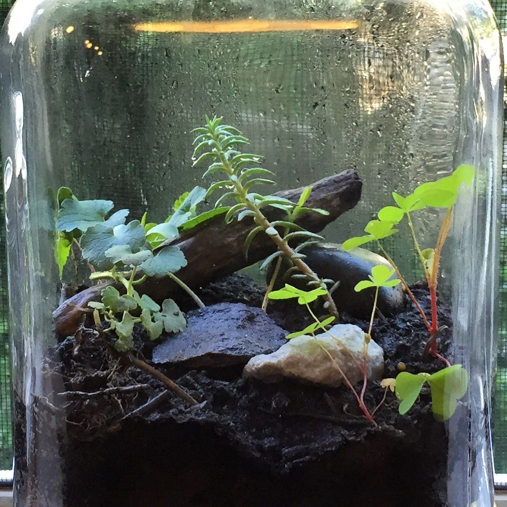
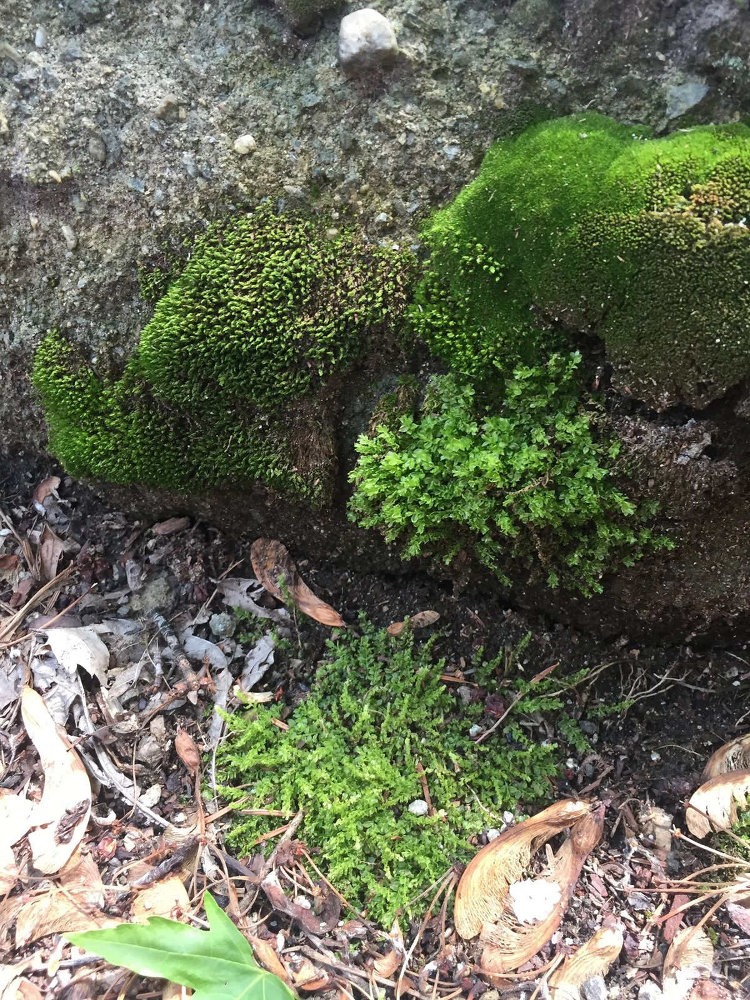
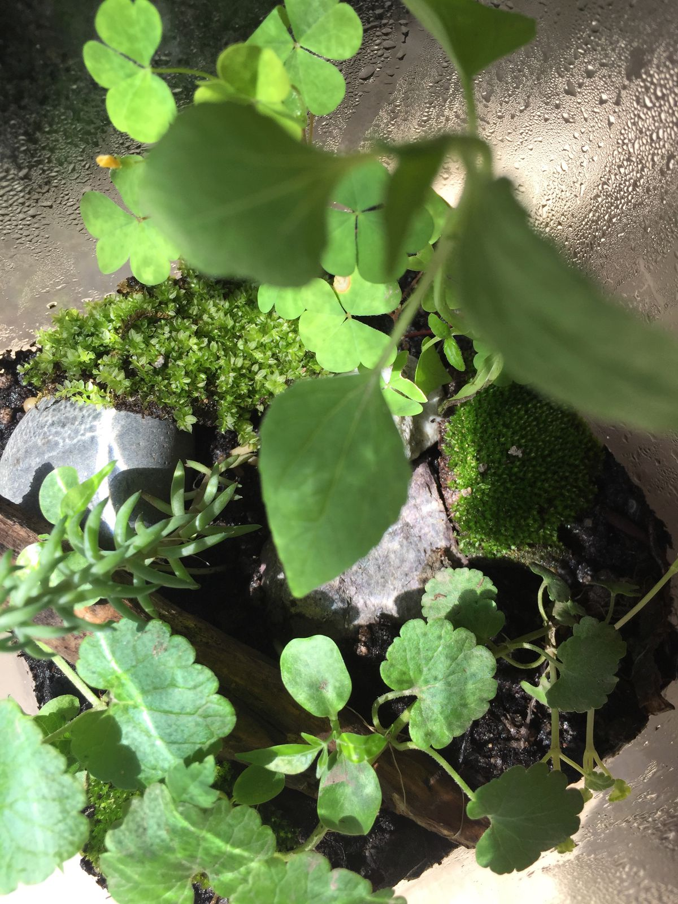

Terrariums
About a month ago, a friend asked me whether I wanted to have pet snails in addition to collecting thousands of plastic snails. I demurred, objecting that they would be difficult to care for—a cat at home would try to eat its habitat. He then suggested I build a terrarium and sent me a link to a YouTube page.
Typically, I don't watch many videos, whether it be YouTube videos, TV shows, or movies. But I decided to watch one of the shorter videos at roughly 10 minutes. And I was hooked.

SerpaDesign posts a new video each week, often focusing on DIY terrariums. The videos, usually ranging from 10 minutes to 30 minutes, are accessible and educational. I soon found myself watching these videos for hours at a time. Go watch some! They're great!
A couple weeks after I watched the first video, a different friend messaged me to see whether I wanted go for a bike ride. No, I said, because I had hurt my back a few days earlier, but I wanted to build a terrarium. So I went to the hardware store to pick up some supplies and I headed to his house, where he had a backyard full of plants.
We started by making a false bottom from gravel, covered with a plastic window screen, covered by crushed lump charcoal, covered by the soil substrate. Wandering around the yard, I found a couple of sticks and stones that I liked for the environment. I then grabbed some plants—oxtails, an ivy-like vine, and some others I couldn't identify—and added them.
As soon as the next day, the plants were looking better in their new environment. Some plants have doubled in size and one is beginning to flower. The vine has grown tons of new roots and leaves. Soon I'll need to start trimming some of them.

But the terrarium didn't feel quite done. I continued watching these SerpaDesign videos on YouTube. After watching one describing mosses, I found some moss in my backyard and added it to the terrarium.
Before I can add any snails, I want to get some springtails, which I am expecting to have by the end of the week. Springtails are little white bugs that generally live in the charcoal layer and perform essential mold control and decomposition for the ecosystem.

I probably only need another day or two of the terrarium open to dry out (I overwatered it to start) before I can seal it up for good. In that time, I should be able to get some springtails and snails.